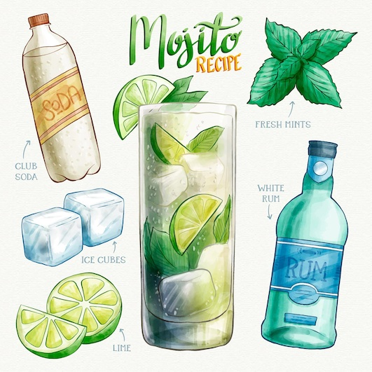

Mojito

Odin's cocktail for digestion
Mix this classic cocktail for a party using fresh mint, white rum, sugar, zesty lime and cooling soda water.
Play with the quantities to suit your taste.
Ingredients
- juice of 1 lime
- 1 tsp granulated sugar
- small handful mint leaves, plus extra spring to serve
- 60ml white rum
- soda water, to taste
Steps
- Muddle the lime juice, sugar and mint leaves in a small jug, crushing the mint as you go.
- Pour into a tall glass and add a handful of ice.
- Pour over the rum, stirring with a long-handled spoon.
- Top up with soda water, garnish with mint and serve.